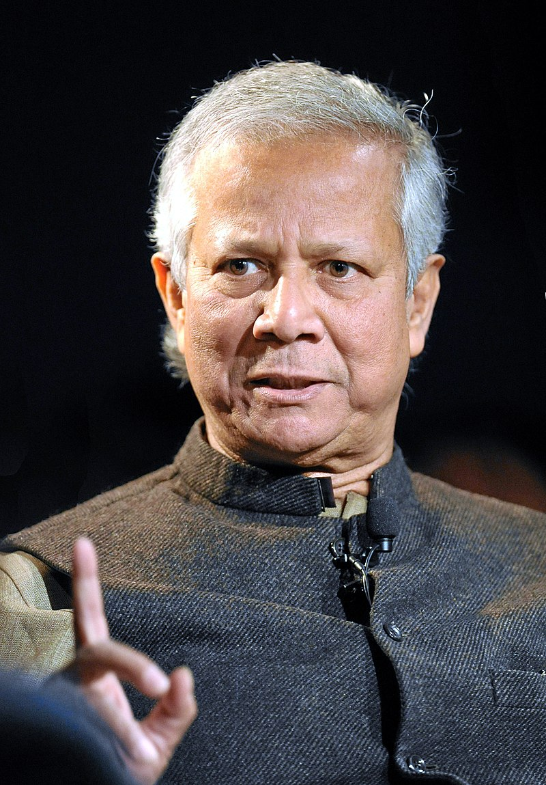

Muhammad Yunus

Hằng năm, Quỹ Nobel luôn gọi điện để thông báo cho người được trao giải Nobel Hòa bình. Tuy nhiên, cuộc gọi này còn nhắm đến một mục đích khác, đó là ghi lại phản ứng của người nhận giải trước tin này trong một đoạn phỏng vấn kéo dài một phút.
Vào một ngày tháng Mười năm 2006, Quỹ Nobel ở Stockholm đã điện thoại cho Muhammad Yunus, Giám đốc một ngân hàng dành cho người nghèo mang tên Grameen và cũng là doanh chủ xã hội được nhiều người biết đến nhất trên thế giới. Ý tưởng đã thay đổi cuộc đời của Yunus rất đơn giản: Cho người nghèo vay những khoản vay nhỏ để họ có thể đầu tư mạo hiểm cho các hoạt động kinh doanh của riêng mình và từ đó thoát nghèo.
Giữa những năm 1970, quê hương Bangladesh của Yunus đang bị nạn đói hoành hành. Yunus là giáo sư đại học và ông đã phải chứng kiến nghèo đói và bệnh tật diễn ra khắp nơi. “Tôi cảm thấy bất lực khi chứng kiến nhiều người chết vì đói. Là một nhà kinh tế, tôi không có công cụ hữu hiệu nào để giúp giải quyết tình trạng đó.”
Khi ông đưa ra ý tưởng cho vay tín dụng vi mô, các ngân hàng lớn đều gạt đi vì cho rằng nó không khả thi. Họ nói với ông rằng người nghèo về cơ bản không đủ khả năng vay tín dụng. Họ cho rằng ông là người quá ngây thơ mặc dù ý định của ông rất tốt. Họ cười nhạo và tiễn ông ra khỏi cửa. Sau nhiều tháng chịu thất bại, ông đề nghị được làm người bảo lãnh cho các khoản vay của người nghèo và chủ của các ngân hàng đều cảnh báo rằng chính ông sau đó sẽ phải là người đi trả nợ thay cho họ.
Không hề khiếp sợ trước điều đó, Yunus bắt đầu cho những người thợ thủ công đan rổ nghèo túng sống trong những ngôi làng nhỏ ở Bangladesh vay những khoản tiền nhỏ. Kết quả thật đáng kinh ngạc với những người chỉ sống với vài xu mỗi ngày thì việc có thêm vài đô-la có thể thay đổi toàn bộ cuộc đời họ. Đặc biệt, chính ông cũng vô cùng ngạc nhiên vì họ luôn trả tiền vay đúng hạn. Yunus tiếp tục sang những ngôi làng khác để tìm kiếm các dự án có thể cho vay vốn.
Năm 1983, Yunus trở thành người sáng lập, đồng thời là CEO của Ngân hàng Grameen – tổ chức đã giúp ông tiên phong và truyền bá ý tưởng về tín dụng vi mô.
Vào thời điểm Quỹ Nobel thực hiện cuộc gọi, Ngân hàng Grameen đã cho gần bảy triệu người nghèo sống trong các ngôi làng ở Bangladesh vay vốn, trong đó 97% người vay là phụ nữ. Tỷ lệ các khoản vay được trả hết lên đến 99%.
Không chỉ vậy, Yunus đã khai sinh phong trào xóa đói giảm nghèo toàn cầu trên toàn thế giới bằng phương thức tín dụng vi mô. Nếu sự bắt chước là hình thức nịnh nọt chân thành nhất[52] thì Yunus chính là người được nịnh nhiều nhất đến khó tin vì mô hình ngân hàng cho người nghèo vay vốn của ông đã xuất hiện ở hơn 100 quốc gia trên toàn thế giới, giúp thay đổi cuộc sống của hàng chục triệu người.
Khi Quỹ Nobel gọi điện cho Yunus, anh trai của ông đã bắt máy và chuyển điện thoại cho Yunus. Đại diện của Quỹ Nobel hỏi ông: “Ông có thông điệp nào muốn nhắn gửi tới mọi người nhân dịp này không?”
“Một thông điệp mà chúng tôi luôn truyền tải từ trước đến nay, đó là nghèo đói là một hiện tượng nhân tạo. Nghèo đói không thuộc về thế giới văn minh của con người và chúng ta có thể thay đổi hiện trạng nghèo đói. Việc duy nhất chúng ta cần làm là tái thiết kế lại các chính sách và các cơ quan phục vụ. Lúc đó sẽ không có ai phải chịu đựng sự đói nghèo nữa. Tôi hy vọng giải thưởng sẽ đưa thông điệp này đến với nhiều người để mọi người tin tưởng rằng chúng ta có thể tạo ra một thế giới không còn nghèo đói. Đó là điều tôi muốn nói.”
“Ông đã làm việc với Ngân hàng Grameen trong hơn ba thập kỷ qua. Điều đó có giúp ông có thêm niềm tin vào tính khả thi của công việc mình đang làm không?”
“Tất nhiên là có. Chúng tôi thấy niềm hy vọng hiển hiện rõ từng ngày. Mỗi ngày lại có thêm những người thoát nghèo. Mọi chuyện diễn ra ngay trước mắt chúng tôi và điều đó có thể xảy ra trên toàn thế giới. Đây không phải là một lý thuyết mà là câu chuyện thực tế. Con người có thể thay đổi số phận của chính họ, miễn là họ có được sự hỗ trợ phù hợp từ các tổ chức. Họ không yêu cầu người khác làm từ thiện. Đó không phải là giải pháp cho sự nghèo đói. Chúng tôi không làm điều gì đặc biệt, ngoại trừ việc cho người nghèo vay tiền. Điều này quyết định tất cả và tạo ra sự thay đổi.”
Sinh năm 1940 tại thành phố cảng Chittagong, Giáo sư Yunus đã từng theo học tại Đại học Dhaka của Bangladesh, sau đó nhận học bổng Fulbright và bắt đầu nghiên cứu kinh tế học tại Đại học Vanderbilt. Ông nhận bằng tiến sĩ kinh tế của Trường Vanderbilt năm 1969 và một năm sau trở thành giáo sư thỉnh giảng môn kinh tế tại Đại học Middle Tenessee. Khi trở lại Bangladesh, Yunus trở thành Trưởng khoa Kinh tế của Đại học Chittagong.
Rất may cho người nghèo trên toàn thế giới, ông không làm việc lâu ở vị trí đó.
Xin ông cho biết ý tưởng cho vay tín dụng vi mô bắt nguồn từ đâu?
Tôi quan tâm đến tình trạng đói nghèo không qua con đường làm chính sách hay nghiên cứu mà chỉ vì tôi quan sát thấy sự đói nghèo diễn ra xung quanh mình và tôi không thể quay lưng trước tình trạng đó.
Năm 1974, tôi thấy mình không thể tiếp tục giảng dạy các lý thuyết kinh tế cao sang trên giảng đường đại học nữa khi phía sau lưng tôi là nạn đói khủng khiếp đang diễn ra ở Bangladesh.
Tôi đột nhiên nhận ra các lý thuyết kinh tế đều rỗng tuếch khi đứng trước sự tàn phá của cái đói và cái nghèo. Tôi muốn làm những việc trực tiếp giúp đỡ những người sống xung quanh tôi, dù chỉ là một người, để họ có thể sống thêm một ngày đỡ chật vật hơn. Điều đó khiến tôi đối mặt với sự thật là người nghèo phải tranh đấu để có được những khoản tiền rất nhỏ để sống. Tôi đã bị sốc khi chứng kiến một người phụ nữ sinh sống trong một ngôi làng phải vay không đến một đô-la từ kẻ chuyên cho vay tiền, với điều kiện là anh ta sẽ có đặc quyền mua tất cả những gì cô ấy làm ra với mức giá do anh ta tự quyết định. Đối với tôi, đây chính là một hình thức nô lệ hóa con người.
Tôi quyết định lập một danh sách những nạn nhân của dịch vụ cho vay kinh khủng này. Họ là những người nghèo sống trong ngôi làng kế bên khuôn viên trường đại học mà tôi đang công tác. Khi lập xong, tôi có một danh sách 42 nạn nhân với tổng số tiền vay là 27 đô-la. Tôi tự bỏ ra 27 đô-la để đưa những người nghèo thoát khỏi vòng vây của những kẻ cho vay. Niềm vui của những người nghèo này khiến tôi muốn làm nhiều hơn nữa. Nếu tôi có thể đem lại hạnh phúc cho nhiều người với một số tiền nhỏ như vậy, tại sao tôi lại không làm nhiều hơn thế chứ?
Tài chính vi mô đã thay đổi đất nước Bangladesh như thế nào?
Toàn bộ đất nước Bangladesh đã thay đổi nếu anh quan sát từ tầng lớp những người nghèo nhất. Nhìn vào tổng thể, Bangladesh vẫn là một nước nghèo. Nhưng những người phụ nữ Bangladesh, đặc biệt là những phụ nữ nghèo nhất, đã được tiếp thêm sức mạnh. Đó là một sự tiến bộ vượt bậc. Phụ nữ có khả năng tiếp cận vốn, họ có thể lập kế hoạch và có mơ ước. Con em của họ được đến trường và rất nhiều phụ nữ theo học lên cấp cao hơn nhờ chương trình hỗ trợ tài chính của Ngân hàng Grameen. Các cộng đồng mới được ra đời.
Một thế hệ mới đang xuất hiện. Các công nghệ mới như công nghệ thông tin, công nghệ di động dần phổ biến ở Bangladesh – một đất nước có đến 70% người dân chưa có điện để dùng. Chúng tôi mua các thiết bị phát điện sử dụng năng lượng mặt trời và kết nối với điện thoại di động. Nhà ở bắt đầu mọc lên cùng với các cơ sở hạ tầng khác. Toàn bộ nền kinh tế đã thay đổi. Mọi người tự tạo việc làm cho bản thân. Họ không cần chờ đợi ai đến để thuê mình làm việc nữa.
Tạo sự tự tin cho các doanh nhân tiềm năng
Khi trao cho những phụ nữ các khoản vay nhỏ, chúng tôi trao cho họ công cụ để tự khám phá bản thân, để họ hiểu năng lực thực sự của mình. “Tôi không bao giờ nghĩ rằng mình có khả năng, sự sáng tạo và sự khéo léo đó. Tôi không nghĩ mình có thể làm ra tiền. Vì vậy khoản vay vốn đó là xuất phát điểm để tôi biết mình có thể làm những gì.”
Khi anh có được những thành công đầu tiên từ khoản vay 30 hay 35 đô-la, có công việc làm ăn riêng và đủ khả năng để thanh toán khoản vay, anh đã được trang bị đủ kỹ năng để có thể làm được nhiều hơn thế. Anh có thể đăng ký vay 50 cho đến 60 đô-la và bắt đầu những thử thách lớn hơn so với những việc anh làm khi có khoản vay đầu tiên.
Sau 10 hay 15 lần như thế, anh đã đủ cứng cáp để bắt đầu những thách thức lớn hơn cả sự hình dung của bản thân. Chúng tôi giới thiệu công nghệ thông tin vào trong chương trình. Chúng tôi thành lập một công ty điện thoại di động có tên là Grameenphone và mang điện thoại đến với những ngôi làng ở Bangladesh. Chúng tôi cho người dân vay tiền để mua điện thoại di động và kinh doanh dịch vụ di động. Việc kinh doanh này rất phát triển. Những người phụ nữ nghèo giờ đây đã trở thành những nữ doanh nhân đầy tự tin, họ có thể bắt đầu những công việc kinh doanh mà trước đó họ chưa từng nghe đến. Họ chưa từng nhìn thấy một chiếc điện thoại trong đời nhưng họ đã chấp nhận ý tưởng kinh doanh liên quan đến nó. Bây giờ thì đã có hơn 100 ngàn phụ nữ kinh doanh điện thoại ở khắp đất nước Bangladesh và họ đang kinh doanh rất phát đạt. Họ góp phần kết nối đất nước này với phần còn lại của thế giới.
Đó chính là một hoạt động kinh doanh. Nếu tôi có một chiếc điện thoại và những người khác không có, họ sẽ phải đến gặp tôi nếu muốn sử dụng điện thoại. Họ trả tiền cho tôi để thực hiện cuộc gọi dịch vụ của tôi giống như máy điện thoại công cộng vậy. Như vậy, chủ nhân của chiếc điện thoại sẽ trở thành người cung cấp dịch vụ điện thoại công cộng.
Về việc tái định nghĩa khái niệm “doanh chủ”
Bằng cách nhìn nhận về doanh chủ theo một nghĩa rộng hơn, chúng ta có thể thay đổi bản chất của chủ nghĩa tư bản một cách sâu sắc và giải quyết được rất nhiều vấn đề kinh tế và xã hội trong thị trường tự do. Hãy hình dung một doanh chủ với hai động lực chính, thay vì chỉ có một động lực duy nhất là tạo lợi nhuận. Hai động lực này không liên quan với nhau nhưng cả hai đều đáng theo đuổi: một là tối đa hóa lợi nhuận và hai là làm những điều tốt cho mọi người trên thế giới này.
Mỗi loại động cơ sẽ dẫn đến những kiểu kinh doanh khác nhau. Kiểu động lực đầu tiên dẫn đến mô hình kinh doanh tối đa hóa lợi nhuận, còn kiểu thứ hai là mô hình kinh doanh xã hội.
Kinh doanh xã hội là một hình thức kinh doanh mới với mục tiêu tạo ra sự thay đổi trên thế giới. Các nhà đầu tư khi đầu tư vào mô hình kinh doanh xã hội sẽ lấy lại được khoản đầu tư của mình nhưng họ sẽ không ăn chia lợi nhuận. Toàn bộ lợi nhuận sẽ được đầu tư lại cho doanh nghiệp để mở rộng quy mô, cải thiện chất lượng sản phẩm và dịch vụ. Một mô hình kinh doanh xã hội sẽ không có sự ăn chia và không ai mất mát điều gì.
Một khi luật pháp thừa nhận hình thức kinh doanh xã hội, rất nhiều doanh nghiệp sẽ trở thành doanh nghiệp xã hội bên cạnh những hoạt động nền tảng của họ. Rất nhiều các nhà hoạt động từ các tổ chức phi lợi nhuận sẽ nhận thấy đây là một cơ hội kinh doanh thú vị. Không giống với lĩnh vực phi lợi nhuận nơi người ta phải tìm kiếm tài trợ để tiếp tục hoạt động, một doanh nghiệp xã hội có thể chủ động thu, chi và tạo ra thặng dư để mở rộng quy mô. Doanh nghiệp xã hội sẽ tự có thị trường vốn riêng để gây vốn.
Thế hệ trẻ ở khắp nơi trên thế giới, đặc biệt là ở những nước phát triển sẽ thấy hứng thú với mô hình doanh nghiệp xã hội vì đây là cơ hội để họ thử thách bản thân và tạo ra sự khác biệt bằng cách sử dụng khả năng sáng tạo của bản thân. Ngày nay, có không ít bạn trẻ thường cảm thấy nản chí vì họ không tìm thấy những thử thách xứng tầm, những thử thách khiến họ hào hứng trong thế giới của chủ nghĩa tư bản hiện đại. Chủ nghĩa xã hội mang đến lý tưởng cho họ đấu tranh để bảo vệ. Tuổi trẻ luôn mơ ước được tạo ra một thế giới tốt đẹp hơn của riêng họ.
Doanh nghiệp xã hội sẽ giúp giải quyết phần lớn các vấn đề kinh tế và xã hội hiện đại. Thách thức ở đây là chúng ta phải tìm ra những mô hình kinh doanh sáng tạo và áp dụng chúng để tạo ra những tác động hiệu quả với chi phí thấp cho xã hội. Dịch vụ y tế và tài chính cho người nghèo, công nghệ thông tin cho người nghèo, giáo dục và đào tạo cho người nghèo, quảng cáo tiếp thị cho người nghèo, năng lượng tái chế – tất cả đều là những lĩnh vực tiềm năng cho doanh nghiệp xã hội hoạt động. Kinh doanh xã hội rất quan trọng vì nó giúp giải quyết những nỗi lo chủ yếu của loài người. Nó có thể giúp thay đổi cuộc sống của 60% dân số thế giới – những người nghèo nhất – và giúp họ thoát nghèo.
Về việc tạo ra thị trường cổ phiếu cho doanh nghiệp xã hội
Để kết nối các nhà đầu tư với các doanh nghiệp xã hội, chúng ta cần tạo ra thị trường chứng khoán xã hội để giao dịch cổ phiếu của các doanh nghiệp xã hội. Nhà đầu tư sẽ bước vào thị trường này với một định hướng rất rõ ràng là họ muốn tìm kiếm các doanh nghiệp xã hội với sứ mệnh mà anh ta quan tâm. Ai muốn kiếm tiền có thể tìm đến với kiểu thị trường chứng khoán truyền thống.
Để một thị trường chứng khoán xã hội hoạt động hiệu quả, chúng ta cần có các bên chịu trách nhiệm xếp hạng doanh nghiệp, chuẩn hóa các thuật ngữ, định nghĩa, các công cụ đo lường tác động, các biểu mẫu báo cáo và các ấn phẩm chuyên biệt về tài chính, như tờ Thời báo Phố Wall xã hội chẳng hạn. Các trường kinh doanh cần mở các khóa đào tạo và chương trình cấp chứng chỉ về doanh nghiệp xã hội theo những cách hiệu quả nhất, và quan trọng nhất là những khóa học này cần truyền cảm hứng để học viên cũng muốn trở thành các doanh chủ xã hội.
Về việc thay đổi nhận thức của mọi người.
Thách thức lớn nhất của tôi luôn là làm sao để thay đổi suy nghĩ của mọi người. Nhận thức của chúng ta đôi khi cũng chống lại chính bản thân mỗi người. Chúng ta nhìn nhận sự việc theo cách mà nhận thức của chúng ta muốn nhìn nhận. Chúng ta cũng trở nên quen thuộc với một lối tư duy cố định. Phần lớn thói quen tư duy này đến từ những năm tháng đi học. Những người thầy chúng ta theo học hay những cuốn sách chúng ta đọc sẽ hình thành tư duy của chúng ta và từ đó mỗi người sẽ bị gắn chặt với lối tư duy đó. Vì vậy, chúng ta thường không thể vượt qua tư duy của chính mình.
Nếu anh là một sinh viên xuất sắc từ thời đi học, cuối cùng anh sẽ trở thành phiên bản “trẻ tuổi hơn” của vị giáo sư mà anh quý mến và kính trọng nhất. Đó chính là cách tư duy hoạt động. Khi anh có suy nghĩ mới, lối tư duy này sẽ mâu thuẫn với kiểu tư duy cũ. Anh sẽ phải đấu tranh nhưng lối suy nghĩ cũ rồi sẽ thắng thế vì nhận thức của chúng ta quá mạnh. Nếu chúng ta có một hệ thống giáo dục, quy trình học tập giúp chúng ta giữ được tinh thần nguyên sơ ban đầu, đồng thời cho phép mỗi người có thể tích tụ thêm sự hiểu biết và không bao giờ trở thành phiên bản trẻ của một vị giáo sư nào đó, chúng ta vẫn là chính mình và vẫn có thể tiếp nhận những quan điểm khác biệt. Đó sẽ là một điều rất tuyệt vời. Nhưng hệ thống trường học cũng có lối tư duy của riêng họ và rất khó để bước chân vào lối mòn tư duy ấy để thay đổi nó. Sự thay đổi cần phải diễn ra nhanh hơn. Thế giới đang phát triển nhanh hơn, đặc biệt trong thế kỷ XX, nhưng tâm trí con người và hệ thống giáo dục lại đang thay đổi rất chậm. Đây chính là thách thức lớn nhất mà tôi luôn phải đối mặt.
Người nghèo và cây bonsai.
Với tôi, người nghèo giống như cây bonsai. Nếu anh gieo vào chậu đất những hạt giống của một cây cao nhất, anh sẽ có được một bản sao của cây cao nhất đó nhưng chiều cao chỉ được tính bằng centimet. Những hạt giống anh chọn không có vấn đề gì cả, chỉ có chậu đất để trồng chúng là không phù hợp. Người nghèo là những cây bonsai. Bản chất của họ không có vấn đề gì cả. Đơn giản là xã hội không trao cho họ mảnh đất đủ tốt để phát triển. Tất cả những gì chúng ta cần làm để giúp họ thoát nghèo là tạo ra một môi trường phù hợp cho họ phát triển. Một khi người nghèo có thể bộc lộ được khả năng và sự sáng tạo của mình, sự nghèo đói sẽ biến mất rất nhanh.